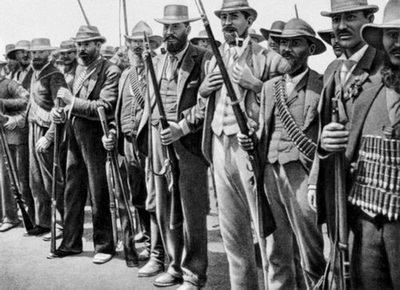

Жизненный уклад африканеров
Важно помнить, что предки африканеров ехали в Южную Африку как фермеры. Они получали крупные земельные наделы, первоначально занимались охотой и земледелием. Такой уклад жизни дольше всего сохраняли потомки фуртрекеров и участников Великого Трека - буры. Они держали у себя многочисленную азиатско-негритянскую прислугу, которая помогала им на полях, и обычно мастерски владели огнестрельным оружием. Со временем и многие из них стали горожанами, основав такие города, как Йоханнесбург и Претория. Тем не менее, они по сей день сохранили жёсткий патриархальный уклад.

Капские голландцы же, жители более урбанизированной части страны, либерализовались, в частности, они более спокойно восприняли британское владычество. Они имели более спокойный, городской уклад жизни, который успешно сохраняют до сих пор.
Главная страница.
Ссылка на восьмёрки